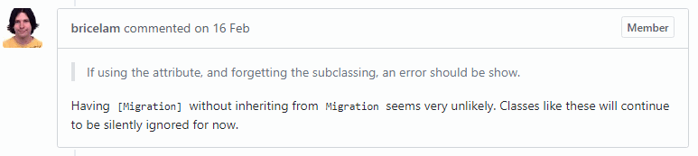

Favor error messages over declarative code
Author: Kasper B. Graversen
[Introduction] [All categories] [All articles] [Edit article  ]
]
Code Readability
Coding Guideline
With the introduction of declarative language features such as LINQ in C# and Streams in Java, I've come to notice a new coding trend. Programmers easily become "obsessed" with achieving 'slick-looking code' by means of using the new declarative language constructs. Unfortunately, this at the expense of proper error handling, and thus also obfuscating the underlying requirements of the code.
Please show your support by sharing and voting:


Table of Content
With the advent of new programming features such as LINQ for C# and streams for Java, I see programmers program differently. A coding practice, where one strives toward short functional and to-the-point code - often in for form of many consecutive transformation on some data. Unfortunately, such code has a tendency to cater only for the happy-paths. And only dealing with the happy paths, we all know, is a job half done. I had problems with a plugging I was developing the other day, and I think is illuminates the problem quite well. The plugin is for a well-established ORM framework from Microsoft (Entity Framework). I'm favoring this code base over some homemade example to to show that the coding practise is in fact of a general nature.
When starting the plugin all I got was a
System.ArgumentNullException: Value cannot be null.
Parameter name: key
at System.ThrowHelper.ThrowArgumentNullException(ExceptionArgument argument)
at System.Collections.Generic.Dictionary`2.TryInsert(TKey key, TValue value, InsertionBehavior behavior)
at System.Collections.Generic.Dictionary`2.Add(TKey key, TValue value)
at System.Linq.Enumerable.ToDictionary[TSource,TKey,TElement](IEnumerable`1 source, Func`2 keySelector, Func`2 elementSelector, IEqualityComparer`1 comparer)
at System.Linq.Enumerable.ToDictionary[TSource,TKey,TElement](IEnumerable`1 source, Func`2 keySelector, Func`2 elementSelector)
at Microsoft.EntityFrameworkCore.Migrations.Internal.MigrationsAssembly.<>c__DisplayClass3_0.<.ctor>b__0()
at Microsoft.EntityFrameworkCore.Internal.LazyRef`1.get_Value()
at Microsoft.EntityFrameworkCore.Migrations.Internal.MigrationsAssembly.get_Migrations()
at Microsoft.EntityFrameworkCore.Migrations.Internal.MigrationsAssembly.FindMigrationId(String nameOrId)
at Microsoft.EntityFrameworkCore.Migrations.Design.MigrationsScaffolder.ScaffoldMigration(String migrationName, String rootNamespace, String subNamespace)
at Microsoft.EntityFrameworkCore.Design.Internal.MigrationsOperations.AddMigration(String name, String outputDir, String contextType)
at Microsoft.EntityFrameworkCore.Design.OperationExecutor.AddMigrationImpl(String name, String outputDir, String contextType)
Say what? I was bewildered as to whether I had done something wrong or there was a bug in the framework. The error is of such a general nature it was impossible to find useful information on the internet.. And of course it didn't help, that I was completely new at using the Entity Framework when I encountered this error.
Declaritive code and error handling
Here is the failing code:
_migrations = new LazyRef<IReadOnlyDictionary<string, TypeInfo>>(
() => (
from t in Assembly.GetConstructableTypes()
where t.IsSubclassOf(typeof(Migration))
&& t.GetCustomAttribute<DbContextAttribute>()?.ContextType == contextType
let id = t.GetCustomAttribute<MigrationAttribute>()?.Id
orderby id
select new { Key = id, Element = t })
.ToDictionary(i => i.Key, i => i.Element));
Notice the liberal use of modern concepts in here.
* Lazy evaluation wrapping (using the Lazy construct)
* LINQ (from..where),
* and null-conditionals (?.).
Slick code in many eyes. Unfortunately, this code is not particularly good at dealing with wrong input. Not a single error messages to be found, and it is difficult to deduce the requirements it is implementing.
Let's introduce the scene where this code is used, and then discuss the code a bit more in-depth.
The API requirements
Part of the Entity Framework tool chain is a database migration tool where a database can be "lifted" to cater for new code. To plug into the migration process, one has to implement the following:
[Migration("Custom migrations title")]
class MigrationHook : Migration
{
protected override void Up(MigrationBuilder builder)
{
// My stuff
}
}
Notice how you must both inherit Migration and define a title for the logging using the [Migration] attribute. The requirement to use both inheritance and attributes is a fairly common way of defining extension points of an API or application. So nothing wrong with that. But the lack of error handling is striking. In particular, I think the error handling is important at the integration points of your API. At least if you want people to use them.
Here are the cases the code does not take into account
- Raise an error for all classes inheriting
Migrationthat do not have the attribute[Migration]. - Raise an error for all classes having the attribute
[Migration]but do not inheritMigration.
A solution
There are many ways to make an implementation that detect and report errorneous implementations. A declarative one is to
- Find all types that either inherit
Migrationor use the[Migration]attribute - If any type only does one of the two collect and report them using an exception
- Transform all the types as the code above and return it.
Yes this will require more lines of code, and it will require to break up the LINQ into multiple separate portions.
Bug report
I reported the bug to Microsoft. Their reaction was hilarious. I guess they prefer slick-looking code over proper error handling :-)

Please show your support by sharing and voting:
Congratulations! You've come all the way to the bottom of the article! Please help me make this site better for everyone by commenting below. Or how about making editorial changes? Feel free to fix spelling mistakes, weird sentences, or correct what is plain wrong. All the material is on GitHub so don't be shy. Just go to Github, press the edit button and fire away.
Read the Introduction or browse the rest of the site